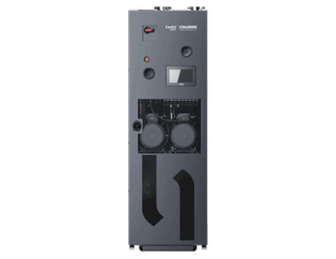
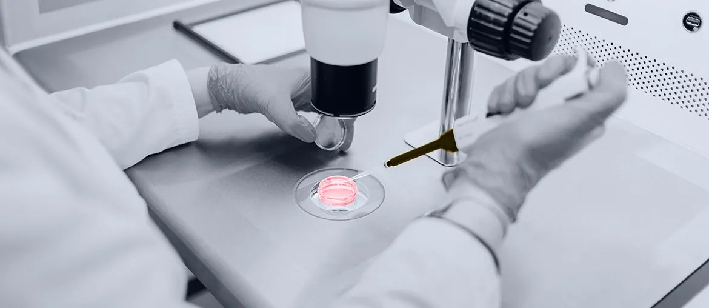

Map the urgent backlog
Review deployment tools, validation data, telemetry flows, and handoffs that most affect operations delivery this quarter.
Proposal brief by Elinext
CoolIT is scaling direct liquid cooling for AI data centers. That work needs steady software, DevOps, and QA support around design, validation, deployment, and internal operations.
Saw you're hiring a contract Technical Talent Acquisition Specialist to grow the team. Here is how Elinext could cover urgent Java, Python, C++, DevOps, and QA gaps while recruiting catches up.

The signal says CoolIT is scaling technical hiring, not just backfilling one role. AI data center demand is pushing CDUs, coldplates, rack manifolds, and services forward at the same time. That creates pressure on internal tools, test data, cloud pipelines, and customer deployment support. If hiring takes months, current teams carry more load and roadmap dates can slip.
Engagement model: a dedicated bridge squad under CoolIT's PO or operations lead, starting with a six-week pilot and weekly demos.
Review deployment tools, validation data, telemetry flows, and handoffs that most affect operations delivery this quarter.
Build a Java, Python, or C++ module tied to CoolIT's support or operations roadmap for handover.
Stabilize CI, test automation, and release checks so CoolIT's team can extend it safely after handover.
Prepare notes, demo recordings, and hiring feedback for roles CoolIT still wants permanent after the pilot.
Elinext is a full-cycle software development partner, active since 1997. Our team has about 700 in-house specialists, with no freelancers or subcontractors. For CoolIT, the fit is backend, DevOps, QA, and hardware-software support, backed by ISO 9001 and ISO 27001. We have delivered work for Siemens, Broadcom, Volkswagen, TRUMPF, TUI, and Parrot. The squad can work under your manager and follow CoolIT's release rhythm. That adds senior capacity without disrupting CoolIT's permanent hiring plan.

Java, C++, WebSocket, Azure, Jenkins, and QA for online equipment data.
View case study
Multiple delivery teams supported a complex industrial platform over time.
View case study